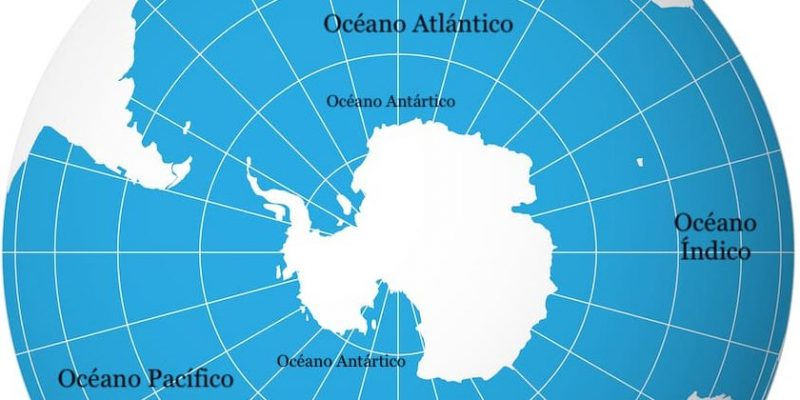

Te explicamos todo sobre la Antártida, su clima, relieve, fauna y otras características. Además, países con base en la Antártida.
La Antártida (o Antártica en algunos países) es el cuarto continente más grande del mundo y el más austral (al sur) de todos. De hecho, hacia el centro de su territorio se encuentra ubicado el polo sur del planeta Tierra. Su territorio está en su casi totalidad (98%) cubierto de hielos que alcanzan los 1,9 km de espesor.
La superficie del continente es mayor a la de Oceanía o Europa, siendo el cuarto continente más grande del mundo, con una superficie total de 14.000.000 kilómetros cuadrados, de los cuales apenas 280.000 están libres de hielo durante el verano y 17.968 son de costas.
Para retornar a la página principal click aquí